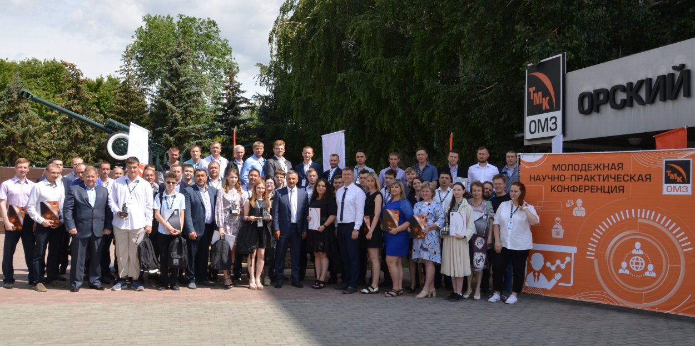

О компании ОМЗ
ОМЗ — ведущий российский производитель оборудования для атомной энергетики, нефтегазовой и металлургической отраслей, включающий такие предприятия, как "Ижорские заводы" и "Уралмаш".
Направления деятельности
Компания производит:
Оборудование для АЭС — реакторные установки, ёмкости, трубопроводы
Нефтегазовое оборудование — буровые установки, насосные системы
Металлургическое оборудование — прессы, прокатные станы
Инжиниринговые услуги — проектирование и сопровождение
История компании
Год основания: 1996
ОМЗ основана в 1996 году путём консолидации нескольких машиностроительных предприятий. Компания активно участвовала в модернизации российского промышленного сектора.
В 2000-х годах произошло расширение международных поставок и запуск стратегических партнёрств с Росатомом и зарубежными компаниями.
Принципы работы
Компания придерживается следующих принципов:
Безопасность — оборудование соответствует международным стандартам
Качество — строгий контроль на всех этапах производства
Технологичность — внедрение цифровых решений и инноваций
Производственные мощности
ОМЗ располагает:
Сборочными цехами в Санкт-Петербурге и Екатеринбурге
Собственной металлургической базой
Инженерно-конструкторским центром
Логистической инфраструктурой
Награды и признание
ОМЗ удостоена следующих наград:
2017 — Премия за лучший инновационный проект года
2019 — Золотая медаль "ЭкспоЭнергетика"
2023 — Сертификат ISO 19443
Сегодня ОМЗ — это более 6000 сотрудников, высокотехнологичные производства, и продукция, востребованная в 30+ странах мира.
Подробнее на официальном сайте: omz.ru